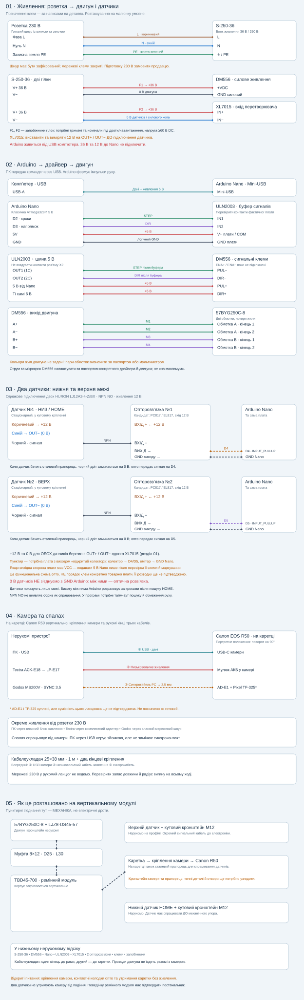

CNCPROM замовлено на 9 587 грн. Оплата, доставка й отримання ще не підтверджені. Замовлені позиції не додаються до повторної закупівлі.
TBD45-700, LJZ8-DS45-57, 57BYG250C-8, муфта 8×12 D25 L30, DM556, S-250-36 та кабелеукладач 25×38 мм. Камера на каретці — у портреті.
Два HURON NPN NO на кутових кронштейнах M12. Нижній — HOME, верхній — межа. 3D показує умовне компонування датчиків і сталевої мішені, а не точні монтажні отвори.
Схема й кожний провід · Актуальні покупки P2

Nano від USB. D2 STEP / D3 DIR через ULN2003 до DM556. Датчики від XL7015 36→12 В; нижній через PC817 до D4, верхній через PC817 до D5. Землю датчиків не з’єднуємо з GND Nano через ізоляційний бар’єр. Розводку плат ще перевіряємо.
Координата розраховується за кроками, датчики не є енкодером. Прошивки немає: кнопки керують демонстрацією, не обладнанням. NPN NO не дає гарантованого виявлення обриву дроту; датчики не утримують каретку без живлення.